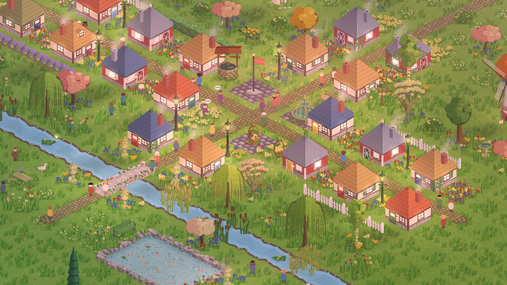
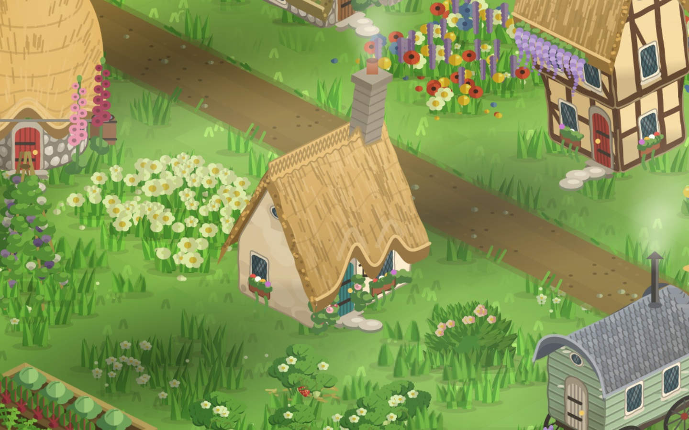
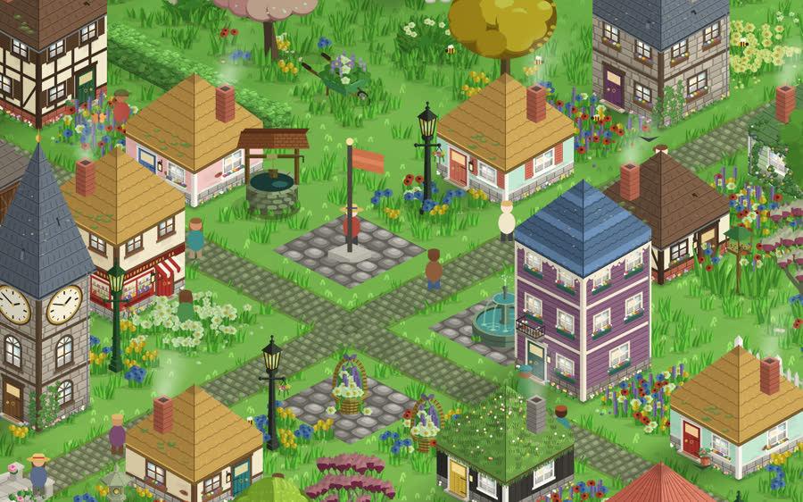
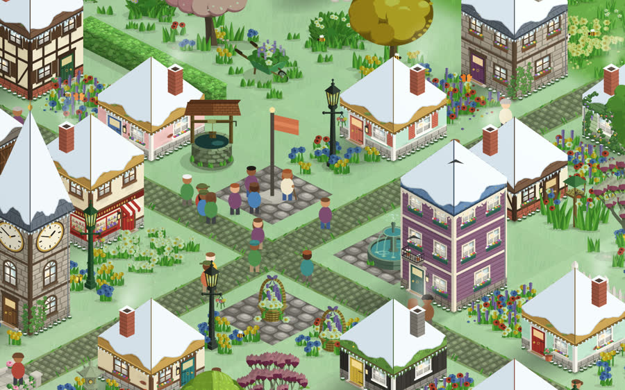
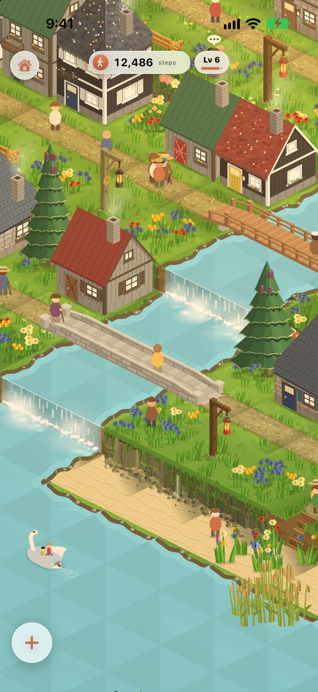
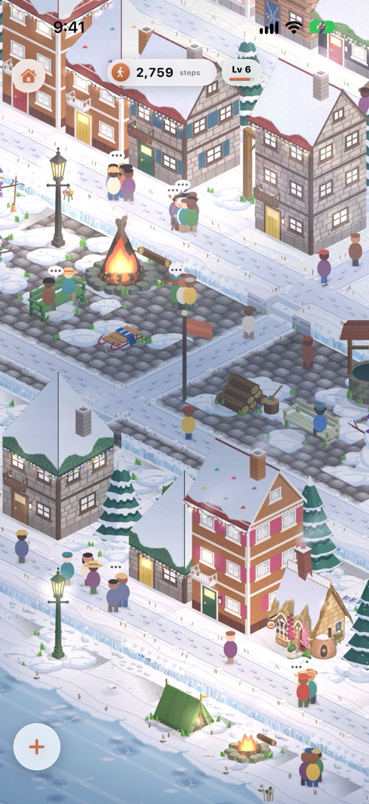

A cozy town with no image files
Every tree, cottage, villager and waterfall in StepHaven is drawn by Core Graphics code while you play. Here's how that works, and the bugs that taught me the most.

StepHaven is a cozy town builder for iPhone. You walk, your steps become points, and you spend the points on cottages, trees, ponds and railways. That's the game. This post is about how it's made, because the way it's made is a little unusual.
The game has no image files. No sprite sheets, no PNGs exported from a drawing app, nothing from an image generator. Every picture on the map, from one blade of grass to a steam train and its carriages, is a Swift function that draws into a Core Graphics context. The result is cached as an SKTexture and handed to SpriteKit. That drawing code, a type called MapArt, is now about 128,000 lines spread over more than 200 files. The whole app is about 275,000 lines of Swift.
(Two honest footnotes. The app icon is an ordinary image. And the asset catalog still holds four onboarding pictures from an early build that nothing uses any more. They're on the list to remove.)
The world isn't stored either. The terrain is a pure function of a seed, and the only thing saved is what you've built. Friends can share a town over CloudKit, with no server of mine in between.
These are the stories from building it that I'd most want to read if someone else had written them.
1. Drawing on walls
The map is classic 2:1 isometric. A tile is a 128 × 64 diamond, and grid square (x, y) lands at scene position ((x − y) × 64, (x + y) × −32). A building's two visible walls run at slopes of +0.5 and −0.5 on screen.
At first I drew windows by nudging coordinates until they looked about right. They never did. A window whose top edge has even a slightly different slope from its wall looks distorted, and it is. The fix was a tiny type that every detail on a wall now goes through:
struct WallPlane {
let origin: CGPoint
/// Rise per unit along the wall: +0.5 shaded, -0.5 lit.
let slope: CGFloat
func point(_ u: CGFloat, _ v: CGFloat) -> CGPoint {
CGPoint(x: origin.x + u, y: origin.y + u * slope + v)
}
}Windows, doors, shutters, sills, flower boxes and shop displays are laid out in the wall's own coordinates (u along it, v down it) and projected. Nothing on a wall is placed in screen space.
The same rule caught a quieter bug. At night, windows glow, and the glow positions were a hand-written list of points. For the first townhouses I wrote the list from my plan and drew the art afterwards, and the lights landed on blank brickwork. Now the lights come from the same geometry the art uses: replay the window calls through the wall plane and take each window's true centre. Only some windows are lit, scattered unevenly, because a building with every light on looks like a showroom.
The sun never moves. It's always in the northeast, so the left wall is always the shaded tone and the right wall the lit one. When a building is turned to face the other way, the canvas is flipped and every light and dark pair is swapped, so the sun stays where it was.

2. Most art bugs are perception bugs
Art drawn in code fails in a particular way. The geometry is right and the picture is still wrong, because it reads as something else. The project's notes are full of these, written down so they don't get relearned:
- Bushes drawn as scalloped spheres with a shine read as plastic. Long leaves splayed sideways read as a hedgehog.
- Moss as big round cushions read as lily pads. Moss as single dots read as polka dots.
- Rock columns striped in equal horizontal bands read as sedimentary layers, and a tall stack of them as pancakes. They had to break into vertical blocks.
- A row of round flints in a chalk cliff read as domino dots.
- Monstera leaves drawn too narrow read as banana leaves. Cut with short slits, they read as leaves with dashes on them.
My favourite was the conifers. Every pine tier was a triangle with a toothed lower edge, split down its axis into a shaded half and a lit half. The result looked like paper folded down the middle. Two changes fixed it. The lower edge became the front half of a 2:1 ellipse, because the camera looks down on a ring of boughs, not a flat fringe. And the shading runs in five wedges fanning out from the tip, because on a cone the shade runs in lines from the tip down to the rim, so the tone changes gradually around it, not in one vertical split.
The seasons work the same way. There's no winter copy of anything. The houses and the ground take the season as a parameter: snow is laid on every visible roof face down to a wavering edge just short of the eave, pale blue on the shaded faces, with icicles along the eaves and a snowy wash drawn into the grass.


3. A depth bug that was really a float
SpriteKit draws in order of zPosition. StepHaven sorts everything by screen y within bands: flat ground far below, cast shadows above that, standing things like houses, trees and villagers around zero, and night lights up near 66,000. The ground band used to sit at −100,000.
Then painted ground started drawing its layers in the wrong order. A tile's paint sits at +0.03 and the soft edge blending it into the next paint at +0.032, just 0.002 higher. SpriteKit stores zPosition as a 32-bit float, and at 100,000 a float can only step by about 0.008. Both layers came out at exactly the same z and drew in whatever order they'd been added.
Standing things only span about ±101 (the map is about 630 rows deep on screen, and each row adds 0.32), so the bands only had to clear that. They moved much closer to zero, where a float resolves about 0.0001:
// They used to be -100,000 and -50,000, but SpriteKit keeps z as a
// 32-bit float, which out there is only good to ~0.008: layers 0.002
// apart on one tile came out at the SAME z and drew in child order.
private static let groundBand: CGFloat = -1_000
private static let shadowBand: CGFloat = -450The bigger depth lesson came with raised ground. Splitting ground from objects assumes ground can never cover anything, which stops being true the moment a tile is lifted. A column 17 steps high draws 272 points above its flat position, over screen space that belongs to tiles eight rows behind it, and everything standing there drew straight through it. Raised tiles now sort as what they are: solid blocks at their own grid position, just under whatever stands on top of them.
The rule that makes any number of levels work: depth always comes from the flat grid, never from where the lifted tile appears on screen. From a fixed isometric camera a heightfield hides things in exactly flat-grid order. Height decides which band a surface belongs in, never its order within that band. Moving villagers follow the same rule: work out a villager's depth from its lifted screen position and houses start drawing through cliffs two levels up.

4. The launch watchdog only bites when Xcode isn't watching
Small hills are drawn pixel by pixel: a height field shaded against the sun into a bitmap, at 3x so it stays sharp when you zoom in. The first renderer searched the height field separately for every pixel, which took about 0.9 seconds a texture in a Debug build. A column scan (walk each column of pixels from front to back, and fill rows only when a sample stands higher than everything in front of it) brought that down to about 0.05.
That wasn't the real bug, though. Loading a town drew every hill it needed straight away, in the first frame. For a test town covered in hills, that was about 20 seconds in Debug. Run from Xcode it worked: slowly, but it worked. Launched from the home screen it showed a black screen and was killed with 0x8BADF00D. The debugger switches off iOS's launch watchdog, so the bug only existed away from the debugger.
Three fixes, all still in place:
- Hills draw off the main thread. The tile shows its flat ground until its hill is ready, then the hill fades in.
- Every drawn texture is cached on disk as a PNG, in a folder named after the
LC_UUIDof the binary that drew it. A new build starts with an empty folder and old ones are deleted, so a cache key only has to describe the picture, not the code that drew it. Main-thread time to load a town went from about 4.5 seconds to about 0.8 on an iPhone 17 Pro Max. - Loading is a queue, worked through about 12 milliseconds per frame, under a layer of clouds that part when the town is ready.
One more for anyone putting SpriteKit inside SwiftUI. A plain SKView skips drawing off-screen nodes by default, but SpriteView only turns on the options you pass it, and its default is none. Adding .shouldCullNonVisibleNodes took one screen of a small town from 3,399 draw calls to 425. Packing the common ground textures onto one shared atlas page then took it to 125, because SpriteKit only batches consecutive draws that share a texture.
5. Villagers that every phone agrees on
Shared towns raised an odd question. If two friends look at the same street at the same moment, should they see the same villagers? I decided yes, and without sending a single villager position over the network.
The terrain already worked like that. World is a struct of pure functions over a seed and a grid square. Every layer of noise uses its own seeded SplitMix64 generator, keyed by the square, the seed and a salt, so a chunk can unload and come back identical, and a friend's phone builds the same mountains and rivers from the same seed:
init(x: Int, y: Int, seed: UInt64, salt: UInt64 = 0) {
var s = seed
s = s &+ (salt &* 0x9E3779B97F4A7C15)
s = s &+ (UInt64(bitPattern: Int64(x)) &* 0xBF58476D1CE4E5B9)
s = s &+ (UInt64(bitPattern: Int64(y)) &* 0x94D049BB133111EB)
state = s == 0 ? 0x9E3779B97F4A7C15 : s
}So villagers became the same kind of thing: a function of the seed, the town and the wall clock. Time runs in six-minute cycles of fifteen 24-second beats. A villager leaves home at the start of a cycle, goes on outings whose destinations are rolled from the world, the home, the cycle and the beat, follows a deterministic A* route, and is home by the last beat. Each frame just asks where the plan puts them now. Wild animals work the same way, one possible visit per 10-second slot.
The traps were all hidden randomness. Anything read out of a Swift dictionary has to be sorted first: Swift seeds its hashing per launch, so the order differs from one phone, and one launch, to the next. The clock has to be the wall clock, not SpriteKit's time since launch. Night has to be the same night for everyone, so a shared town keeps its creator's time zone. And when a friend's edit arrives, plans already made are kept, and only the future is re-planned against the new town, or the two phones drift apart.
To check it, a debug build logged every villager's tile and every visiting animal's position every five seconds, on the wall-clock mark. I pulled the log off a phone and diffed it against the simulator's. The wildlife matched at every instant. The villagers matched from the start of the next cycle once both phones agreed on the time of day, and they stayed in step through a friend's edit.

6. Sharing a town with CloudKit and no server
A shared town is one CloudKit record zone in its creator's private database, shared whole with a zone-wide CKShare. The town is split into one record per thing per tile, keyed like nature:12,-4, and each record carries a version: a time and a player id. Merging is per record and the newest version wins. Deletions are kept as tombstones, so a bench one friend removed can't come back from another friend's older copy. An invite is a six-character code in the public database that points at the share, and the creator approves each person who asks to join.
No edit reports itself to the sync code. Every save compares the town's records with the previous save and queues the difference to send, so anything that changes the town syncs, including features written long after the sync layer.
Two lessons only showed up once I tested with two real iCloud accounts. First: when one record in a save batch conflicts, CloudKit fails every other record in that batch with batchRequestFailed ("Atomic failure"), even when the save isn't atomic. I'd treated that as fatal, and because the push ran before the pull, a phone that had painted over its friend's tiles got stuck on its own version for good, retrying the same batch every 20 seconds. Now those records are simply sent again, and the pull runs even if the push fails.
Second: merging a friend's changes rebuilds the SpriteKit scene, and my first version rebuilt the SwiftUI view around it too. Any edit from a friend closed your inventory if you had it open. Now only the scene is swapped, under a snapshot of the map that fades out once the new scene is drawn.
Silent pushes from a CloudKit subscription wake the other phone. In testing, a change showed up there about four seconds after it was made.
How it was actually made
I designed StepHaven and built it with AI coding tools, mostly Claude Code. Every lesson in this post lives in one notes file at the root of the project, now over 11,000 lines, written as rules with the reason attached ("Never compute z from a surfacePosition"; "scalloped spheres with glints read as plastic"). Claude Code reads it at the start of every session. It ended up as the project's art bible and its bug history in one, and it's the main reason the mistakes above didn't come back.
None of the pictures come from an image model. They're drawing code, checked by rendering contact sheets and looking at them hard. The sound is a mix: some effects are synthesized in code, and the recorded ambience, effects and jukebox music were generated with ElevenLabs.
If you build things in Core Graphics or SpriteKit and want to compare notes, I'd love to hear from you.
StepHaven: Cozy Town Builder
Free on iPhone. No ads, and your steps stay on your phone.
Download on theApp Store